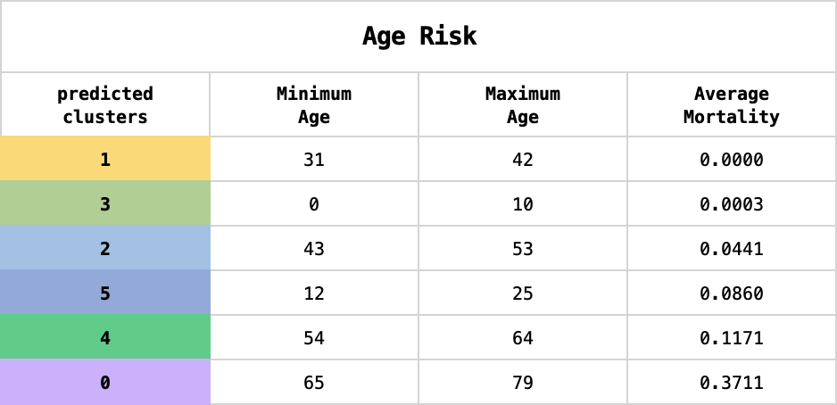
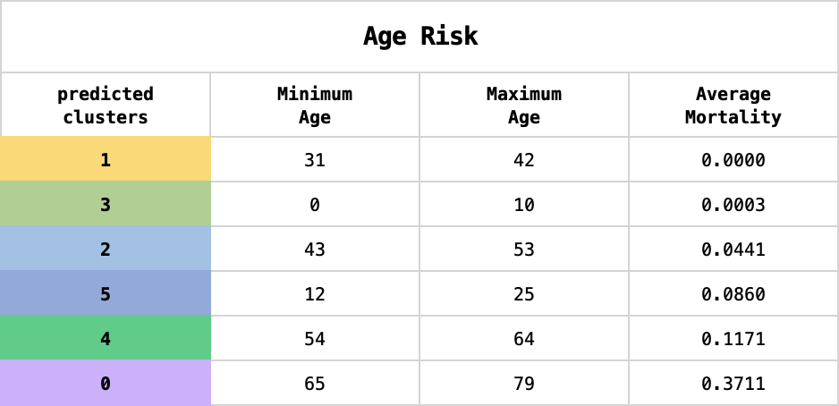

Age Risk Model
 

Considerations
To better understand the correlation between age and COVID-19 mortality risk, we used KMeans = 6 with age and mortality. For visualization, data was grouped and sorted by "predicted clusters" and calculated for age range and average mortality risk. According to the machine learning model, cluster 0 or ages 65+ is at highest risk for COVID-19 mortality. This is consistent with vaccine policy of ages 65+ being one of the first population groups to qualify for vaccination. Interesting to note was cluster 5, or ages 12 to 25, had a higher mortality risk than older populations. This may be due to an increase in substance abuse and/or poorly managed mental health issues as reported in current events' increase in opioid overdoses and mental health hospitalizations. Additional consideration is the invincible behavior demonstrated through continual socialization (e.g. Covid parties).